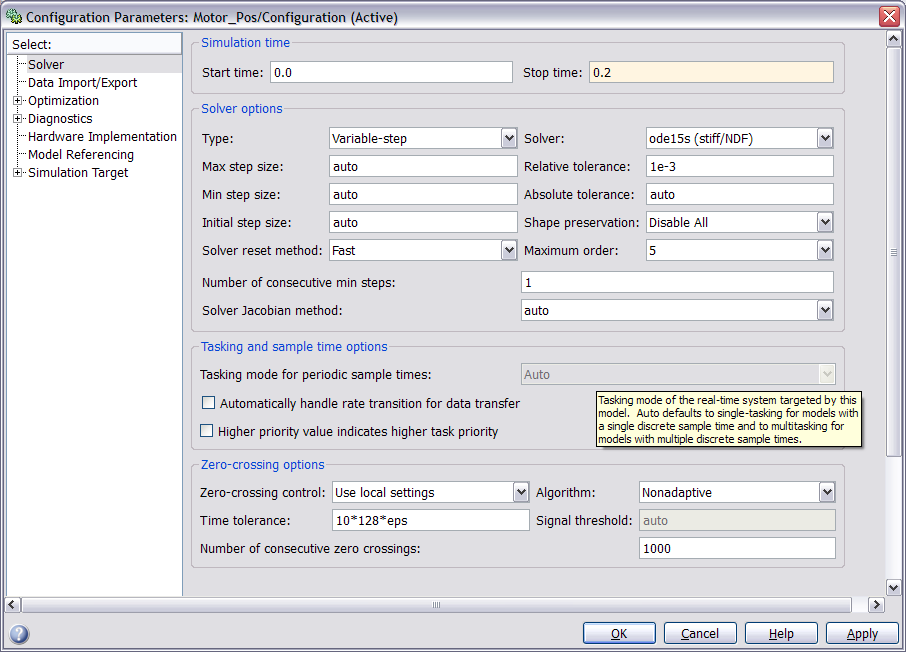
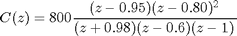
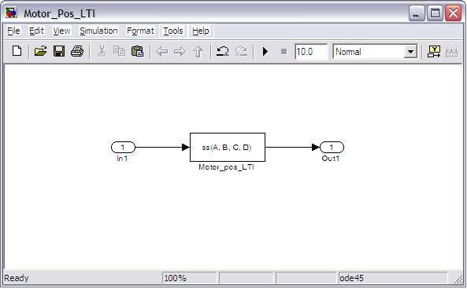
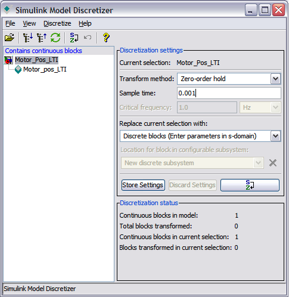
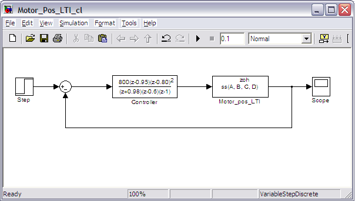
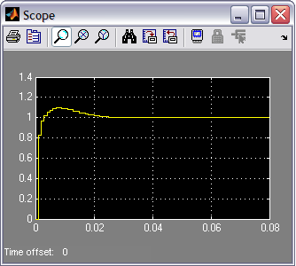

DC Motor Position: Simulink Controller Design
Contents
In the DC Motor Position: Simulink Modeling section, we developed a Simulink model of the DC motor system using three different methods. You can download one of these models here, Motor_Pos.mdl. In this section, we will employ this model within Simulink to simulate and design different approaches to control. Specifically, we will explore the design of a digital control system.
Open-loop response

Begin with the above model saved as a subsystem and follow the steps given below.
- Remove the In and Out ports.
- Insert a Step block from the Simulink/Sources library and connect it with a line to the Voltage input.
- To view the output position, insert a Scope from the Simulink/Sinks library and connect it to the Position output.
- To provide an appropriate unit step input at t=0, double-click the Step block and set the Step time to "0".
The system should now appear as in the following figure.

In order to simulate this system, the details of the simulation must first be set. This can be accomplished by selecting Configuration Parameters from the Simulation menu. Within the resulting menu, define the length for which the simulation is to run in the Stop time field. We will enter "0.2" since 0.2 seconds will be long enough for the step response to reach steady state. Also in the Configuration Parameters dialog box, the numerical solver employed in the simulation can be specified. Go ahead and change the Solver field from the default ode45 (Dormand-Prince) to the ode15s (stiff/NDF) solver. Since the time scales in this example are very small, this stiff system integration method is more efficient than the default integration method.

The physical parameters must now be set. Enter the following commands at in the MATLAB command window.
J = 3.2284E-6; b = 3.5077E-6; K = 0.0274; R = 4; L = 2.75E-6;
Then run the simulation (press Ctrl-T or select Start from the Simulation menu). When the simulation is finished, double-click on the scope and hit its autoscale button. You should see the following output which goes unstable and obviously does not meet our design requirements. Note that this response is consistent with the results we achieved from the MATLAB command line in the DC Motor Position: System Analysis page.

Extracting a linear sampled model into MATLAB
We will now extract a linear sampled version of this continuous-time model into the MATLAB workspace. The extraction of a sampled model can be performed from the MATLAB command line using the command dlinmod, though it is preferrable to perform the extraction from directly within Simulink as we will demonstrate here. We will use the model from above.
The first thing that we need to do is to identify the inputs and outputs of the model we wish to extract. First right-click on the signal representing the Voltage input in the Simulink model. Then choose Linearization > Input Point from the resulting menu. Similarly, right-click on the signal representing the Position output and select Linearization > Output Point from the resulting menu. The input and output signals should now be identified on your model by arrow symbols as shown in the figure below.

In order to perform the extraction, select from the menus at the top of the model window Tools > Control Design > Linear Analysis. This will cause the Linear Analysis Tool to open. Next follow the steps given below.
- From the Linear Analysis Tool window, click the Options button. From the resulting window, change the sample time to "0.001" as shown in the figure below. The rate conversion method can remain the default Zero-Order Hold.

- Within the Linear Analysis Tool window, the Operating Point to be linearized about can remain the default, Model Initial Condition. In order to perform the linearization/discretization, next click the Linearize button identified by the green triangle.
- The result of this linearization/discretization is the linsys1 object which now appears in the Linear Analysis Workspace. This model can be exported by simply dragging the object into the MATLAB Workspace.
This object can then be used within MATLAB in the same manner as an object created directly from the MATLAB command line. Specifically, entering the command zpk(linsys1) in the MATLAB command window demonstrates that the resulting model has the following form.
(1)![$$ P(z) = \frac {\Theta(z)}{V(z)} = \frac{0.0010389(z+0.9831)(z + 9.256\times10^{-7})}{z(z-1)(z-0.9425)} \qquad [ \frac{rad}{V} ] $$](Content/MotorPosition/Simulink/Control/html/MotorPosition_SimulinkControl_eq46894.png)
Note that this model is identical to the model generated from the conversion performed in DC Motor Position: Digital Controller Design page. This makes sense since the same sample time and discretization method were used, and because the original model was already linear.
To further verify the validity of the model extraction, we will generate an open-loop step response of the discrete-time transfer function in MATLAB. Enter the following commands at the prompt of the MATLAB command window. You should see the following plot which is in agreement with the output from the continous Simulink model evaluated above.
t = 0:0.001:0.2;
step(linsys1,t);
grid

The extracted discrete models can then be used within MATLAB for various analysis and controller design tasks. In the following, we directly employ the Simulink model from above to simulate the implementation of a digital controller without explicitly discretizing the continuous-time plant model.
Implementing digital control in Simulink
In the DC Motor Position: Digital Controller Design page a digital controller was designed with the following transfer function.
(2)
We can use this compensator to simulate the associated closed-loop digital control system in Simulink. Starting from the Simulink model we used above for extraction, delete the Input and Output ports and add the following:
- Two Zero Order Hold blocks from the Simulink/Discrete library
- Discrete Zero Pole block from the Simulink/Discrete library
- Sum block from Simulink/Math Operations library
Place one Zero Order Hold block on the input of the Motor_pos subsystem which is a continuous model of the plant. This Zero Order Hold blocks converts a discrete-time signal to a stepwise-constant continuous signal. The other Zero Order Hold block is placed on the output of the Motor_pos subsystem and serves to take discrete samples of the output signal of the plant. Edit the Zero Order Hold blocks such that the Sample time fields are set to "0.001" (this is fast compared to the desired step response in the MATLAB tutorial).
Next edit the Discrete Zero Pole block to model the discrete controller transfer function described above. Specifically, edit the Zeros field to "[0.95 0.80 0.80]", the Poles field to "[-0.98 0.6 1]", the Gain field to "800", and the Sample time field to "0.001". Then label the block "Controller" and resize it to view its entire contents.
Next, enter "|+-" to the List of signs field of the Sum block. The character "|" serves as a spacer between input ports. Now we need to set up the simulation to observe the motor's position for a step input.
- Attach a Step block to the positve input of the Sum block and attach a Scope block to the plant output.
- Double-click the Step block and set the Step time to "0".
Finally, connect the blocks as shown below.

Before we can simulate the closed-loop system, we again need to set an appropriate simulation time. Select Configuration Parameters... from the Simulation menu and enter "0.08" in the Stop time field. We choose this stop time in order to observe the system long enough to see if it satisfies the 0.04 seconds settling time requirement. If you have started a new session of MATLAB or skipped the open-loop response part of this example, then the physical parameters for the simulation must be set again. Run the following commands at the MATLAB prompt if necessary.
J = 3.2284E-6; b = 3.5077E-6; K = 0.0274; R = 4; L = 2.75E-6;
Now the simulation can finally be run. Recall that this can be accomplished by pressing Ctrl-T or selecting Start from the Simulation menu. When the simulation is finished, double-click on the scope and hit its autoscale button. You should see the following output.

From the above figure, it appears that the overshoot is less than 16% and the settling time is less than 0.04 seconds as required. This is consistent with the analysis employed in designing the digital controller. We have not, however, assessed the response of the system with a disturbance present. A step disturbance can be added in a similar manner to the way that the step reference was added as shown in the following figure. Sum the disturbance between the controller and plant following the Zero Order Hold block since the disturbance signal is continous.

Within the model, set the disturbance Step time to occur at "0.03" seconds. Then re-run the simulation and observe the scope output as described above. The resulting position graph should appear as shown below.

From inspection of the above, you can see that there is a slight bump beginning at 0.03 seconds due to the disturbance, but the system is able to reject its effect and the steady-state error still goes to zero as required.
If you have not done so already, save your Simulink model. You can also download our version of this model here, Motor_Pos_cl.mdl.
Converting a continuous-time model to discrete-time within Simulink
In the above, we extracted a linear sampled model of our plant from our Simulink model into the MATLAB workspace using the Linear Analysis Tool. We also, in effect, discretized the plant for the purposes of simulation using Zero Order Hold blocks within Simulink. In this section, we will generate a discrete-time model of our plant without the use of the Zero Order Hold blocks. This approach offers a wider array of discretization techniques than can be achieved through Simulink blocks, which are limited to Zero Order and First Order Hold. This is especially useful in generating a digital controller from a continous design.
So far we have chosen to employ the first principles simulink model but we could have just as easily used the Simscape model or the LTI System model. One thing to be careful of, however, is that if you were to use the Simscape model of the plant in the above, the physical Simscape signals would need to be converted to dimensionless Simulink signals in order to interface with the Simulink blocks we employed. This process is described in the DC Motor Position: Simulink Modeling page.
In the following, we will discretize the LTI System model which can be downloaded here, Motor_Pos_LTI.mdl, or you can create it yourself as DC Motor Position: Simulink Modeling page.
Recall that the LTI System block imports a model from the MATLAB workspace. Therefore, you need to enter the following commands at the command line where it is presumed that values have already been entered for the various physical parameters.
A = [0 1 0
0 -b/J K/J
0 -K/L -R/L];
B = [0 ; 0 ; 1/L];
C = [1 0 0];
D = 0;
Your model should appear as follows.

To discretize this model:
- Remove the In1 and Out1 ports.
- Click on Tools > Control Design > Model Discretizer and the LTI System block will turn red.
- Enter a Sample time of 0.001 and leave the Transform method as Zero-order hold.
- Then choose Discretize selected blocks from the Discretize menu.

The LTI model now is converted to discrete. Let's add a digital controller and simulate the closed-loop response of this model. Employ the same controller we used above. The final model should appear as follows.

Simulate the model as we have done previously. The resulting position response should appear as follows.

Note the agreement with the closed-loop simulation results we found previously. This makes sense since the first principles model and the LTI System block model are equivalent and both Simulink models used a zero-order hold type sampling to discretize the plant.
You can download our version of this model here, Motor_Pos_LTI_cl.mdl.